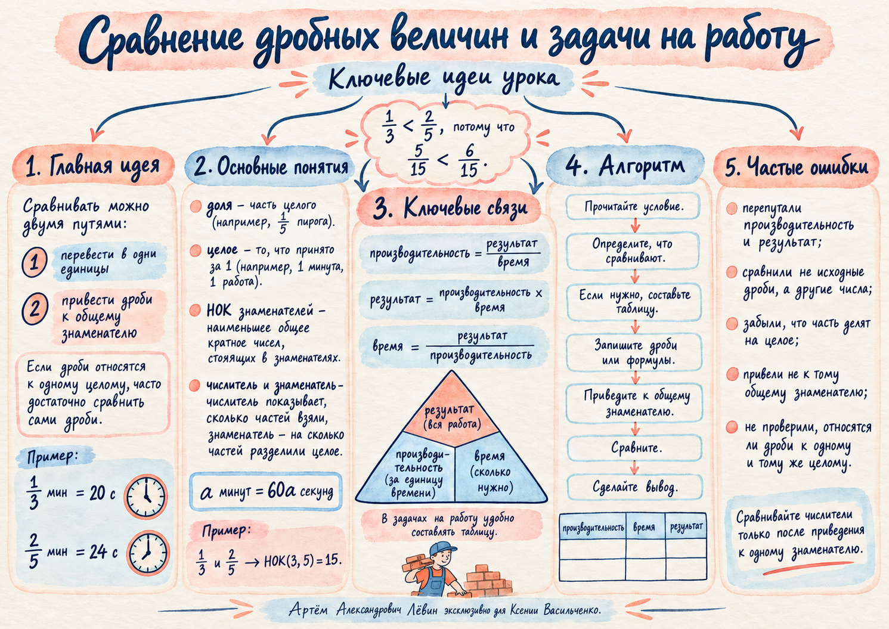

08.10.26 · учебный маршрут
Сравнение дробных величин
и задачи на работу
Научитесь видеть, что именно сравнивается: минуты, доли одного целого или результаты работы за разное время.
20 секунд меньше 24 секунд. Единицы измерения приводим к одному виду, затем сравниваем.
Проверить на модели →Дробная часть минуты
Каждую дробную часть минуты можно перевести в секунды, умножив на 60.
Два равноправных способа: перевести обе дроби в секунды либо привести их к общему знаменателю. В обоих случаях единицы должны совпадать.
Другой пример. Сравним и минуты: НОК(20, 15) = 60.
Измените обе дробные части минуты и проследите, как одновременно меняются секунды, заполнение полос и знак сравнения.
Сначала определите, что означает дробь
В разных задачах одинаковая запись дроби может обозначать долю попаданий или длину одной равной части.
Никита попал 8 раз из 15, Ярослав — 11 из 20.
У Ярослава выше доля попаданий.
Брус 5 м разделили на 7 равных частей, другой брус 6 м — на 10.
Часть первого бруса длиннее.
Доля попаданий = попадания / все выстрелы. Длина одной части = общая длина / число равных частей.
Результат = производительность × время
Сравните доли одинакового заказа, выполненные за разные промежутки времени. В примерах производительность постоянна.
Здесь R — результат работы, t — время, p — результат за единицу времени. Для деления нужны положительные t и p.
Одинаковый заказ: мастер и ученик
Мастер выполняет заказ за 6 ч, ученик — за 8 ч. Сравним результат мастера за 5 ч и ученика за 7 ч. Пусть весь заказ равен n деталей, n > 0.
Ученик за 7 часов выполнит больше: 21n/24 > 20n/24 при n > 0. Когда важна только доля, весь заказ удобно принять за 1.
Равные результаты
Первый работник делает заказ за 5 часов, второй — за 10 часов. За 3 и 6 часов они выполнят одну и ту же долю заказа.
Проверьте оба случая в цифровой лаборатории: меняйте время работы и смотрите на долю выполнения и итог сравнения.
Три проверки перед ответом
Минуты сравнивайте с минутами, секунды — с секундами.
Для долей числа деревьев нужен один и тот же парк; для производительности — одинаковый заказ.
Самая высокая производительность ещё не гарантирует больший результат за любой промежуток.
Предскажите результат
Первый работник делает заказ за 5 часов, второй — за 10. Если первый работает 3 часа, второй — 6 часов, кто выполнит большую долю?
Самостоятельная тренировка
Десять упражнений из пособия. Выполните вычисления письменно, затем откройте ответ и сравните рассуждения.
- Сколько секунд составляют минуты?
Показать ответ
45 секунд: 60 · 3/4 = 45.
- Сравните минуты и минуты, выразив оба промежутка в секундах.
Показать ответ
25 с > 24 с, поэтому 5/12 мин > 2/5 мин.
- Сравните минуты и минуты через наименьший общий знаменатель.
Показать ответ
7/18 = 14/36 < 15/36 = 5/12.
- В саду яблони составляют всех деревьев, груши — . Каких деревьев больше?
Показать ответ
Яблонь больше: 21/48 > 20/48.
- Один участник попал 9 раз из 16 выстрелов, другой — 11 раз из 20. У кого выше доля попаданий?
Показать ответ
У первого: 45/80 > 44/80.
- Верёвку длиной 7 м разделили на 9 равных частей, а длиной 5 м — на 7. Какая часть длиннее?
Показать ответ
Часть первой верёвки: 7/9 = 49/63 > 45/63 = 5/7.
- Мастер выполняет весь заказ за 5 часов. Какую долю он выполнит за 3 часа?
Показать ответ
3/5 заказа при постоянной производительности.
- Первый работник выполняет заказ за 9 часов, второй — за 12. Кто выполнит большую часть: первый за 4 часа или второй за 6?
Показать ответ
Второй: 4/9 < 1/2.
- Первый мастер делает заказ за 5 часов, второй такой же — за 10. Сравните их результаты за 3 и 6 часов.
Показать ответ
Результаты равны: 3/5 = 6/10.
- Первый насос наполняет бак за 18 часов, второй — за 15. Кто наполнит большую часть: первый за 5 часов или второй за 4?
Показать ответ
Первый: 5/18 = 25/90 > 24/90 = 4/15.
Что удалось закрепить
Отмечено 0 из 4 пунктов.
Памятка по занятию — посмотреть постер
